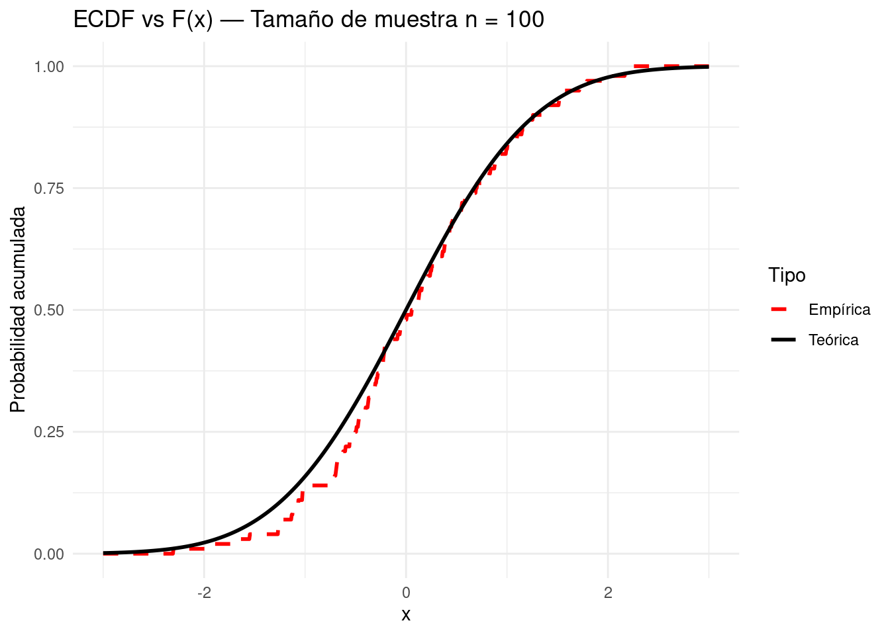

Sea la variable aleatoria \(X\) con función de distribución \(F\). Consideramos una muestra aleatoria simple de tamaño \(n\) de \(X\), es decir, \(X_1 ,\ldots, X_n\) v.a.i.i.d. con distribución dada por \(F\) . Sea \(x_1 ,\ldots, x_n\) una realización de esa m.a.s. Se llama función de distribución empírica a la función \[
\begin{align}
F_{n}(x)=\dfrac{1}{n}\displaystyle\sum_{i=1}^{n}\mathbf{I}_{(-\infty,x]}(x_{i})¸
\end{align}
\] que a cada número real x le asigna la proporción de valores observados que son menores o iguales que x.
Es inmediato comprobar que la función \(F_n\) así definida es una función de distribución:
\(F_n(x) \in [0, 1]\) para todo \(x \in \mathbb{R}\).
\(F_n\) es continua por la derecha.
\(F_n\) es no decreciente.
\(\lim _{x\to -\infty }F_{n}(x)=0\)
\(\lim _{x\to \infty }F_{n}(x)=1\)
Concretamente, \(F_n\) es la función de distribución de una variable aleatoria discreta (que podemos llamar \(X_e\) ) que pone masa \(\frac{1}{n}\) en cada uno de los n puntos \(x_i\) observados:
\(x_i\)
\(1\)
\(2\)
\(\ldots\)
\(n\)
\(p_i = P(X_e = x_i)\)
\(1/n\)
\(1/n\)
\(\ldots\)
\(1/n\)
A la distribución de \(X_e\) e se le llama distribución empírica asociada al conjunto de valores \({x_1 ,\ldots, x_n}\).
\[
\begin{align}
p&=P(\mathbf{I}_{(-\infty,x]}(X_{i})=1)\\
&=P(X_{i}\leq x)\\
&=F(x)
\end{align}
\] De ahí se deduce que \(F_n\) es una variable aleatoria y que \(nF_n(x)\) tiene distribución binomial con parámetros \(n\) y \(p = F(x)\).
3.2 Teorema de Glivenko-Cantelli
El siguiente teorema recoge algunas de las propiedades de la función de distribución empírica.
\(\lim _{n\to \infty }\frac{F_{n}(x)-F(x)}{\sqrt{\frac{F(x)(1-F(x))}{n}}}=Z\), donde \(Z\) es una variable aleatoria con distribución normal estándar y la convergencia es convergencia en distribución.
El siguiente teorema refuerza el resultado (c) anterior, puesto que afirma que la convergencia de \(F_n(x)\) a \(F(x)\) se da uniformemente.
Los aspectos probabilísticos de una característica \(X\), medida en una población, se resumen de forma estilizada en una distribución de probabilidad \(F\).
La distribución de probabilidad \(F\), puede ser aproximada mediante las distribuciones empíricas \(F_n\) obtenidas por muestreo de la población en estudio.
El teorema de Glivenko-Cantelli afirma que esas aproximaciones son uniformes en x.
Por esta razón el teorema de Glivenko-Cantelli se llama a veces Teorema Fundamental de la Estadística Matemática.
Podemos ver a continuación cómo, a medida que aumentamos el tamaño de la muestra (n=10,30,100,1000), la función de distribución empírica se ajusta cada vez mejor a la distribución teórica normal estándar N(0,1), tal como afirma el teorema.
# Cargar librería para gráficoslibrary(ggplot2)# Definir función para graficar ECDF vs distribución teóricacomparar_ecdf_teorica<-function(n, distribucion="normal"){set.seed(123)# Para reproducibilidad# Muestra de tamaño n desde N(0,1)muestra<-rnorm(n)# Dominio comúnx_vals<-seq(-3, 3, length.out =1000)# Distribución teóricaF_teorica<-pnorm(x_vals)# Distribución empíricaecdf_muestra<-ecdf(muestra)F_empirica<-ecdf_muestra(x_vals)# Construir data frame para ggplotdf<-data.frame( x =rep(x_vals, 2), F =c(F_empirica, F_teorica), Tipo =rep(c("Empírica", "Teórica"), each =length(x_vals)))# Graficarggplot(df, aes(x =x, y =F, color =Tipo, linetype =Tipo))+geom_line(size =1)+labs( title =paste("ECDF vs F(x) — Tamaño de muestra n =", n), x ="x", y ="Probabilidad acumulada")+theme_minimal()+scale_color_manual(values =c("Empírica"="red", "Teórica"="black"))+scale_linetype_manual(values =c("Empírica"="dashed", "Teórica"="solid"))}# Generar gráficos para diferentes tamaños de muestracomparar_ecdf_teorica(10)
Warning: Using `size` aesthetic for lines was deprecated in ggplot2 3.4.0.
ℹ Please use `linewidth` instead.
comparar_ecdf_teorica(30)
comparar_ecdf_teorica(100)

comparar_ecdf_teorica(1000)
El Teorema Fundamental de la Estadística Matemática: da una fundamentación de la inferencia estadística, cuyo objetivo principal consiste en extraer información sobre \(F\) a partir de las observaciones muestrales.
toda la inferencia estadística basada en datos reales.
üéØ Ejemplo: Estimaci√≥n del percentil 90 del ingreso mensual
üìå Contexto Sup√≥n que quieres estimar el ingreso mensual por debajo del cual se encuentran el 90% de las personas en una ciudad.
No conoces la distribución real del ingreso $ F(x) $, pero tienes una muestra de datos.
Paso a paso
Simulamos una población Vamos a suponer que el ingreso sigue una distribución log-normal:
En esta sección presentamos una consecuencia importante de la convergencia de \(F_n\) a \(F\) , la definición de estimadores mediante el principio de sustitución.
La convergencia de \(F_n\) a \(F\) permite construir versiones factibles de características poblacionales desconocidas.
Supongamos que estudiamos una característica \(X\) en una población y que el resultado de la observación de \(X\) puede ser modelado como una variable aleatoria con distribución desconocida, digamos \(F\).
Muchas de las preguntas relevantes acerca de la característica \(X\) podrían ser contestadas si su función de distribución \(F\) fuese conocida.
Sea \(X\sim U(0,\theta)\). Se toma una m.a.s. de \(X\) de tamaño n para estimar \(\theta\). Un estimador razonable de \(\theta\) es el máximo de las observaciones, que es estadístico minimal suficiente para \(\theta\): \[
\begin{align}
\hat{\theta}_2 = \max_i {X_i}.
\end{align}
\] El siguiente código muestra:
Para cada tamaño de muestra n, simula valores de \(X_i\)∼U(0,θ),
Calcula \[\hat{\theta} = \max_i {X_i}\]
Compara con el valor real de \(\theta=10\).
Muestra cómo, al aumentar n, el estimador se acerca a \(\theta\).
# Simulación para estimar theta en una uniforme (0, theta)set.seed(42)theta_real<-10# Tamaños de muestran_vals<-c(5, 10, 30, 100)# Simular y compararestimadores<-sapply(n_vals, function(n){muestra<-runif(n, min =0, max =theta_real)max(muestra)})# Mostrar resultadosdata.frame( Tamaño_muestra =n_vals, Estimador_maximo =round(estimadores, 3), Error =round(theta_real-estimadores, 3))
Convergencia del estimador plug-in en la distribución uniforme
En este ejemplo, estimamos el parámetro \(\theta\) de una distribución \(X \sim \mathcal{U}(0, \theta)\) usando el estimador \(\hat{\theta}_n = \max(X_i)\). Este es un estimador tipo plug-in: se usa la distribución empírica para estimar una característica de la distribución teórica.
A continuación, simulamos cómo este estimador converge al verdadero valor \(\theta = 10\) a medida que el tamaño de muestra \(n\) crece.
# Chunk de R — solo código#| label: fig-convergencia-max#| fig-cap: 'Convergencia del estimador plug-in $ \hat{\theta}_n = \max X_i $ hacia el valor real $ \theta = 10 $'#| fig-align: center#| message: false#| warning: falseset.seed(42)theta_real<-10# Vector de tamaños de muestra crecientesn_seq<-seq(5, 500, by =5)# Calcular el estimador para cada nestimadores<-sapply(n_seq, function(n){muestra<-runif(n, min =0, max =theta_real)max(muestra)})# Crear data frame para graficardf_estimacion<-data.frame( n =n_seq, estimador =estimadores)# Graficarlibrary(ggplot2)ggplot(df_estimacion, aes(x =n, y =estimador))+geom_line(color ="steelblue", size =1)+geom_hline(yintercept =theta_real, color ="red", linetype ="dashed")+labs( title =expression("Convergencia de "*hat(theta)[n]*" al valor real "*theta), x ="Tamaño de muestra (n)", y =expression(hat(theta)[n]))+theme_minimal()
Una aplicación del principio de sustitución es la definición de los estimadores basados en momentos. El momento no centrado de orden \(k\) de una variable aleatoria \(X\) con distribución \(F\) se define como \[
\begin{align}
\mu_k=E_F(X^k)=\int x^kdF(x)
\end{align}
\] Si \(X_e\) es una variable aleatoria con función de distribución igual a \(F_n\) , la función de distribución empírica de una m.a.s. de tamaño \(n\) de \(X\), se tiene que sus (a los que llamaremos \(m_{k,n}\)) son de la forma \[\begin{align}
m_{k,n}=E_{F_n}(X_e^k)=\int x^kdF_n(x)=\frac{1}{n}\sum_{i=1}^{n}X_i^k,
\end{align}\] y se denominan momentos muestrales no centrados de orden \(k\). Por ejemplo, \(µ_1\) es la esperanza poblacional y \(m_{1,n}\) la media muestral.
La siguiente proposición garantiza que los momentos muestrales convergen a los poblacionales.
Proposition 3.1 Sea \(X\) variable aleatoria con \(E(X^{2k}) < \infty\). Entonces se verifica que \(m_{k,n} \rightarrow \mu_k\) casi seguro. Además, \[
\begin{align}
\frac{\sqrt{n}(m_{k,n}-\mu_k)}{\sqrt{\mu_{2k}-\mu_k^2}}\xrightarrow{d}Z,
\end{align}
\] con \(Z\sim N(0,1)\).
Proof. Si \(Y_i=X_i^k\) entonces \(m_{k,n}=E_{k,n}(Y_i)=E_{n}(X_i^k)=\frac{1}{n}\sum_{i=1}^{n}X_i^k=\frac{1}{n}\sum_{i=1}^{n}Y_i=\bar{Y}_n\).\
Aplicando la ley fuerte de los grandes números se tiene que \[\begin{align}
\lim _{n\to \infty }\frac{S_n-E(S_n)}{n}&=\lim _{n\to \infty }\frac{\sum_{i=1}^{n}X_i^k-E(\sum_{i=1}^{n}X_i^k)}{n}\nonumber\\
&=\lim _{n\to \infty }\left[\frac{\sum_{i=1}^{n}X_i^k}{n}-\frac{E(\sum_{i=1}^{n}X_i^k)}{n}\right]\nonumber\\
&=\lim _{n\to \infty }\left[\bar{Y}_n-\frac{\sum_{i=1}^{n}E(X_i^k)}{n}\right]\nonumber\\
&=\lim _{n\to \infty }\left[\bar{Y}_n-\frac{nE(X^k)}{n}\right]\mbox{Por ser las $X_i$ una mas de X}\nonumber\\
&=\lim _{n\to \infty }\left[\bar{Y}_n-\bar{Y}\right]=0 \mbox{ Aplicando L.F.G.N}
\end{align}\]
Por lo anterior, se tiene que \(m_{k,n}=\bar{Y}_n\xrightarrow{c.s} \mu_k=\bar{Y}=E_F(X^k)\). Por otro lado, veamos \[\begin{align}
\frac{S_n-E(S_n)}{\sqrt{Var(S_n)}}=\frac{m_{k,n}-E(X^k)}{\sqrt{\frac{Var(X^k)}{n}}}\xrightarrow{d}Z
\end{align}\] donde \(S_n=\sum_{i=1}^{n}X_i^k\). Sabemos que \(E(X^k)=\mu_k\) y que \(Var(X^k)=E[(X^k)^2]-[E(X^k)]^2=\mu_{2k}-\mu_k^2\), de ahí se sigue el resultado.
Proposition 3.2 Consideremos la variable aleatoria \(X\) con \(E(X_{2k})< \infty\). Sea \(\theta=h(\mu_{n} ,\ldots, \mu_{n})\). Si \(h\) es continua en \((\mu_{n} ,\ldots, \mu_{n})\), entonces \(\hat{\theta}_n=h(m_{1,n} ,\ldots, m_{k,n})\) converge a \(\theta\) casi seguro. Además, si \(h\) es derivable en \((\mu_{n} ,\ldots, \mu_{n})\), entonces la distribución límite de \(\hat{\theta}_n\) es normal: \[\begin{align}
\sqrt{n}(\hat{\theta}_n-\theta)\xrightarrow{d} N(0, \sigma_{h,\theta}^2)
\end{align}\]
Example 3.1 Sea \(X\sim U(0,\theta)\). Se toma una m.a.s. de \(X\) de tamaño n para estimar \(\theta\). Un estimador de momentos \(\hat{\theta}_M\) de \(\theta\) viene dado por la siguiente relación \[\begin{align}
E(X)=\frac{\theta}{2}\Longrightarrow m_{1,n}=\frac{\hat{\theta}_M}{2}\Longrightarrow 2m_{1,n}=\hat{\theta}_M\Longrightarrow 2\bar{X}=\hat{\theta}_M
\end{align}\]
Example 3.2
Para la variable aleatoria \(X\) con varianza finita, un estimador para \(\theta=Var(X)\) es \[\begin{align}
\hat{\theta}=h(m_{1,n}, m_{2,n})&=m_{2,n}-m_{1,n}^2\nonumber\\
&=\frac{1}{n}\sum_{i=1}^{n}x_i^2-\bar{x}^2\nonumber\\
&=\frac{\sum_{i=1}^{n}x_i^2-n\bar{x}^2}{n}\nonumber\\
&=\frac{\sum_{i=1}^{n}(x_i-\bar{x})^2}{n}\nonumber\\
&=\frac{(n-1)S_n^2}{n}\nonumber\\
\end{align}\]
Example 3.3
Si \(X\sim Exp(\lambda)\) con \(E(X)=\frac{1}{\lambda}\), entonces \(m_{1,n}=\frac{1}{\hat{\lambda}_M}\)\(\Longrightarrow \hat{\lambda}_M=\frac{1}{m_{1,n}}\Longrightarrow \hat{\lambda}_M=\frac{1}{\bar{X}}\).
Si \(X\sim B(n,p)\), con \(E(X)=np\) y \(Var(X)=npq\), entonces \(m_{1,n}=n\hat{p}\)\(\Longrightarrow\)\(\frac{m_{1,n}}{n}=\hat{p}\)\(\Longrightarrow\)\(\frac{\bar{X}}{n}=\hat{p}\)\(\Longrightarrow\)\(\hat{Var(X)}=n\hat{p}(1-\hat{p})\).
3.5 Estimadores de máxima verosimilitud
3.6 Cálculo del estimador máximo verosímil
Sea \(\underset{\sim}{X} =(X_1,\ldots, X_n)\) una muestra aleatoria simple de una variable aleatoria \(X\) con función de densidad (o de masa de probabilidad) \(f(\underset{\sim}{x}|\theta)\), con \(\theta = (\theta_1,\ldots,\theta_k) \in \Theta \subseteq \mathbb{R}^k\) . Sea \(\mathcal{X}\) el espacio muestral, es decir, el conjunto de todos los posibles valores de \(\underset{\sim}{X}\) . Hemos definido la para \(\underset{\sim}{x} =(x_1,\ldots, x_n )\in \mathcal{X}\) como \[
\begin{align}
L(\cdot|\underset{\sim}{x}):&\Theta\rightarrow \mathbb{R}^+\nonumber\\
&\theta\rightarrow L(\theta|\underset{\sim}{x})=f(\underset{\sim}{x}|\theta)=\prod_{i=1}^{n}f(x_i|\theta)
\end{align}
\]
3.6.1 Preguntas sobre \(X\)
Para cada muestra \(\underset{\sim}{x} \in \underset{\sim}{X}\) , el estimador de máxima verosimilitud \(\hat{\theta}\) de \(\theta\) es el valor de \(\Theta\) que hace máxima la verosimilitud \(L(\cdot|\underset{\sim}{x})\): \[
\begin{align}
L(\hat{\theta}| \underset{\sim}{x} ) = \max_{\theta \in \Theta} L(\theta|\underset{\sim}{x}).
\end{align}
\] Intuitivamente \(\hat{\theta}\) es el valor del parámetro que hace más verosímil la muestra observada. Veremos más adelante que los estimadores de máxima verosimilitud son muy buenos estimadores y que en general tienen propiedades de optimalidad. Además, en muchas ocasiones el estimador máximo verosímil es el que el sentido común nos llevaría a proponer.
Example 3.4 Si \(X\sim Exp(\lambda)\Longrightarrow f(x|\lambda)=\lambda\exp\{-\lambda x\}I_{[0,\infty)}(x)\), \(\lambda>0\)
Se toma una muestra de tamaño \(n=1\) y se observa que \(x=3\). Estudiamos la función de verosimilitud \(L(\lambda|3)=\lambda\exp\{-3\lambda\}\) y buscamos su máximo para \(\lambda>0\).
Buscamos los valores de \(\lambda\) que hacen la derivada cero de \(L(\lambda|3)\): \[
\begin{align}
\label{maxver_exp}
L^{'}(\lambda|3)&=\exp\{-3\lambda\}(1-3\lambda)
\end{align}
\tag{3.1}\] Igualando a cero la expresión (Equation 3.1) se tiene que \(\lambda=\frac{1}{3}\). Como \(L^{'}(\lambda|3)\geq 0\) y \[
\begin{align}
\lim _{\lambda\to 0}L(\lambda|3)=\lim _{\lambda\to \infty}L(\lambda|3)=0
\end{align}
\] Se sigue que el punto crítico de \(L(\lambda|3)\) es un máximo. Así, \(\hat{\lambda}=\frac{1}{3}\)
Si \(E\) es el evento tiene tuberculosis \[
\begin{align}
P(E;\theta)&=P(\mbox{x entre n tienen tuberculosis})\nonumber\\
&=\binom{n}{x}\theta^x(1-\theta)^{n-x}
\end{align}
\tag{3.2}\] Observe que \(\binom{n}{x}\) es un factor constante no tendrá efecto sobre la maximización de la expresión (Equation 3.2) sobre \(\theta\), ver (kalbfleisch et al. (1985)). La función de verosimilitud de \(\theta\) es definida como sigue: \[
\begin{align}
L(\theta)=cP(E;\theta)
\end{align}
\tag{3.3}\] Acá \(c\) es alguna constante positiva con respecto a \(\theta\); esto es, \(c\) no es función de \(\theta\), sin embargo esta debe ser función de los datos. Escogemos \(c\) para obtener una expresión simple para \(L(\theta)\), y resultados subsecuentes no dependerán de la escogencia específica hecha.
\[
\begin{align}
l(\theta)=log L(\theta)
\end{align}
\tag{3.4}\] Observe que, por (Equation 3.3) \[
\begin{align}
l(\theta)=c^{'}+log P(E;\theta)
\end{align}
\tag{3.5}\] donde \(c^{'}=log c\) no es una función de \(\theta\).
\[
\begin{align}
c=\frac{1}{\binom{n}{x}},
\end{align}
\] entonces \[
\begin{align}
L(\theta)=\theta^x(1-\theta)^{n-x}, \mbox{para } 0\leq\theta\leq1
\end{align}
\tag{3.6}\] La función de log verosimilitud es ahora \[
\begin{align}
l(\theta)=xlog(\theta)+(n-x)log(1-\theta), \mbox{para } 0\leq\theta\leq1
\end{align}
\tag{3.7}\] El estimador de máxima verosimilitud (MDL) \(\hat{\theta}\) es el valor de \(\theta\) el cual maximiza \(l(\theta)\).
Tomando la derivada respecto a \(\theta\) de (Equation 3.4) se tiene que \[
\begin{align}
S(\theta)&=\frac{dl(\theta)}{d\theta}\nonumber\\
&=\frac{x}{\theta}-\frac{n-x}{1-\theta}
\end{align}
\tag{3.8}\] Haciendo cero a \(S(\theta)\) tiene una única solución \(\theta=\frac{x}{n}\), para \(1\leq x\leq n-1\). Bajo estas mismas condiciones tomamos la segunda derivada y la multiplicamos por \(-1\) en la siguiente expresión
Ya que \(\mathscr{I}(\theta)>0\) en \(\theta=\frac{x}{n}\), la función de verosimilitud tiene un máximo relativo en \(\theta=\frac{x}{n}\). Más aún, \(L(\theta)=0\) para \(\theta=0\) y para \(\theta=1\), hemos encontrado con esto un máximo global en \(\hat{\theta}=\frac{x}{n}\).
A las funciones \(S(\theta)\) y \(\mathscr{I}(\theta)\) definidas en (Equation 3.8}) y (Equation 3.9), se les llama función Score y función de información respectivamente.
3.6.2 Principio de invarianza del estimador máximo verosímil
Sea \(X_1,\ldots, X_n\) muestra aleatoria simple de \(X\sim f(x|\theta)\) y sea \(\hat{\theta}\) el estimador máximo verosímil de \(\theta\). Si estamos interesados en estimar una función \(\tau(\theta)\) del parámetro, podemos hacerlo mediante \(\tau(\hat{\theta})\). Éste es el resultado que garantiza el siguiente teorema y se conoce como principio de invariancia.
Theorem 3.3 Si \(\hat{\theta}\) es el estimador de máxima verosimilitud de \(\theta\), entonces para cualquier función \(\tau\) el estimador de máxima verosimilitud de \(\tau(\theta)\) es \(\tau(\hat{\theta})\).
Example 3.6 Sea \(X_1,\ldots,X_n\) una m.a.s de \(X\sim N(\mu,\sigma^2)\). Podemos probar que el estimador de máxima verosimilitud para \(\mu\), \(\hat{\mu}=\bar{X}\). ¿Cuál es el estimador de máxima verosimilitud de \(\theta_1=3\mu\), \(\theta_2=\mu^2\) y \(\theta_3=1/\mu\)?
Por el principio de invarianza tenemos que \(\hat{\theta_1}=3\bar{X}\), \(\hat{\theta_2}=\bar{X}^2\) y \(\hat{\theta_3}=\frac{1}{\bar{X}}\).
Se define el error cuadrático medio (ECM) de un estimador \(W\) de un parámetro \(\theta\) como \[
\begin{align}
E_\theta((W-\theta)^2)
\end{align}
\] Ésta es una medida intuitiva del comportamiento de un estimador: cuanto menor sea el error cuadrático medio mejor será el estadístico \(W\). De hecho, para cualquier función \(\phi\) creciente con \(\phi(0) = 0\), \(E_\theta(\phi(|W- \theta|))\) es una medida razonable de lo alejadas que estarán, en promedio, las estimaciones de \(\theta\) que proporcione W.
Así, el error cuadrático medio de un estimador es la suma de su varianza (una medida de su dispersión) más el cuadrado de su sesgo (medida de la desviación sistemática o de la exactitud del estimador).
Es una medida conjunta de precisión y exactitud del estimador.
Por lo tanto, parece sensato buscar estimadores que tengan error cuadrático medio pequeño, porque de esta manera controlaremos tanto la dispersión como la exactitud de las estimaciones.
Figure 3.1: Comparación entre precisión y exactitud
(a) Exactitud vs precisión
# install.packages("ggplot2") # si hace faltalibrary(ggplot2)theta<-0# valor "verdadero"thetahat<-1.2# estimaciónx<-seq(theta-3, thetahat+3, length.out =500)df<-data.frame(x =x, y =dnorm(x, mean =thetahat, sd =0.9))ggplot(df, aes(x, y))+geom_line(linewidth =1.2)+geom_hline(yintercept =0, linewidth =0.8)+# marquitas en el eje para theta y theta-hatgeom_segment(aes(x =theta, xend =theta, y =0, yend =max(y)*0.03), inherit.aes =FALSE)+geom_segment(aes(x =thetahat, xend =thetahat, y =0, yend =max(y)*0.03), inherit.aes =FALSE)+annotate("text", x =theta, y =-max(df$y)*0.05, label =expression(theta))+annotate("text", x =thetahat, y =-max(df$y)*0.05, label =expression(hat(theta)))+labs(title ="Distribución de estimaciones", x =NULL, y =NULL)+coord_cartesian(ylim =c(-max(df$y)*0.08, max(df$y)*1.05), clip ="off")+theme_classic(base_size =14)+theme( axis.text.y =element_blank(), axis.ticks.y =element_blank(), plot.margin =margin(10, 20, 25, 20)# deja espacio para las etiquetas bajo el eje)
Warning in geom_segment(aes(x = theta, xend = theta, y = 0, yend = max(y) * : All aesthetics have length 1, but the data has 500 rows.
ℹ Please consider using `annotate()` or provide this layer with data containing
a single row.
Warning in geom_segment(aes(x = thetahat, xend = thetahat, y = 0, yend = max(y) * : All aesthetics have length 1, but the data has 500 rows.
ℹ Please consider using `annotate()` or provide this layer with data containing
a single row.
Warning in is.na(x): is.na() aplicado a un objeto que no es (lista o vector) de
tipo 'expression
Warning in is.na(x): is.na() aplicado a un objeto que no es (lista o vector) de
tipo 'expression
Estimador de \(\theta\) estará indicado por \(\hat{\theta}\).
Quisieramos que \(E(\hat{\theta})=\theta\).
La distribución muestral para un estimador puntual sesgado positivamente, para el que \(E(\hat{\theta})>\theta\), se muestra en la siguiente figura
library(ggplot2)# --- Parámetros editables ---theta<-0E_thetahat<-0.5# sesgo: centro de la densidadthetahat<-1.2sd0<-0.7# dispersión# ----------------------------# Curva de densidad (normal centrada en E(\hat{theta}))x_min<-theta-1.2x_max<-thetahat+1.2x<-seq(x_min, x_max, length.out =800)y<-dnorm(x, mean =E_thetahat, sd =sd0)df<-data.frame(x, y)ymax<-max(y)# Alturas EXACTAS de las barras (tocar la curva)y_theta<-dnorm(theta, mean =E_thetahat, sd =sd0)# altura en thetay_Ethetahat<-dnorm(E_thetahat, mean =E_thetahat, sd =sd0)# picoggplot(df, aes(x, y))+geom_line(linewidth =1.1, lineend ="round")+# ejes "a mano"annotate("segment", x =x_min, xend =x_max, y =0, yend =0, linewidth =0.8)+annotate("segment", x =x_min, xend =x_min, y =0, yend =1.05*ymax, linewidth =0.8)+# barra corta en theta (hasta la curva)geom_segment(aes(x =theta, xend =theta, y =0, yend =y_theta), inherit.aes =FALSE)+# barra larga en E(thetahat) (hasta el pico)geom_segment(aes(x =E_thetahat, xend =E_thetahat, y =0, yend =y_Ethetahat), inherit.aes =FALSE)+# etiquetas bajo el eje xannotate("text", x =theta, y =-0.06*ymax, label =expression(theta))+annotate("text", x =E_thetahat, y =-0.06*ymax, label =expression(E(hat(theta))))+annotate("text", x =thetahat, y =-0.06*ymax, label =expression(hat(theta)))+# etiqueta del eje yannotate("text", x =x_min-0.03*(x_max-x_min), y =0.9*ymax, label =expression(f(hat(theta))), angle =90)+labs(x =NULL, y =NULL)+coord_cartesian(xlim =c(x_min, x_max), ylim =c(-0.10*ymax, 1.08*ymax), clip ="off")+theme_void(base_size =14)+theme(plot.margin =margin(10, 20, 35, 45))
Warning in geom_segment(aes(x = theta, xend = theta, y = 0, yend = y_theta), : All aesthetics have length 1, but the data has 800 rows.
ℹ Please consider using `annotate()` or provide this layer with data containing
a single row.
Warning in geom_segment(aes(x = E_thetahat, xend = E_thetahat, y = 0, yend = y_Ethetahat), : All aesthetics have length 1, but the data has 800 rows.
ℹ Please consider using `annotate()` or provide this layer with data containing
a single row.
Warning in is.na(x): is.na() aplicado a un objeto que no es (lista o vector) de
tipo 'expression
Warning in is.na(x): is.na() aplicado a un objeto que no es (lista o vector) de
tipo 'expression
Warning in is.na(x): is.na() aplicado a un objeto que no es (lista o vector) de
tipo 'expression
Warning in is.na(x): is.na() aplicado a un objeto que no es (lista o vector) de
tipo 'expression
library(ggplot2)library(patchwork)# ===== Panel (a): arco =====# soporte con ~5% a la izquierda y 95% a la derechaxL<--0.10xR<-2.10theta<-(xL+xR)/2# centro del arco: ahí debe ir la barrathetahat1<-xR# definir el arco (semicircunferencia escalada)c_a<-(xL+xR)/2R_a<-(xR-xL)/2x_a<-seq(xL, xR, length.out =700)hsca<-0.95y_a<-hsca*sqrt(pmax(0, R_a^2-(x_a-c_a)^2))dfa<-data.frame(x =x_a, y =y_a)ymax_a<-max(dfa$y)# altura de la curva en thetay_theta<-approx(x_a, y_a, xout =theta)$yp_a<-ggplot(dfa, aes(x, y))+geom_line(linewidth =1.2, lineend ="round")+# ejesannotate("segment", x =xL-0.3, xend =xR+0.3, y =0, yend =0, linewidth =0.8)+annotate("segment", x =0, xend =0, y =0, yend =1.05*ymax_a, linewidth =0.8)+# barra en el centro (theta)geom_segment(aes(x =theta, xend =theta, y =0, yend =y_theta), inherit.aes =FALSE)+# etiquetasannotate("text", x =theta, y =-0.08*ymax_a, label =expression(theta))+annotate("text", x =thetahat1, y =-0.08*ymax_a, label =expression(hat(theta)[1]))+annotate("text", x =-0.15, y =0.9*ymax_a, label =expression(f(hat(theta)[1])), angle =90)+annotate("text", x =(xL+xR)/2, y =-0.22*ymax_a, label ="(a)")+coord_cartesian(xlim =c(xL-0.2, xR+0.2), ylim =c(-0.25*ymax_a, 1.1*ymax_a), clip ="off")+theme_void(base_size =14)+theme(plot.margin =margin(10, 20, 40, 45))# ===== Panel (b): normal (sin cambios) =====theta_b<-1.00thetahat2<-1.60sd_b<-0.25x_b<-seq(0, theta_b+3.2*sd_b, length.out =700)y_b<-dnorm(x_b, mean =theta_b, sd =sd_b)dfb<-data.frame(x =x_b, y =y_b)ymax_b<-max(dfb$y)p_b<-ggplot(dfb, aes(x, y))+geom_line(linewidth =1.2, lineend ="round")+annotate("segment", x =0, xend =max(x_b)+0.3, y =0, yend =0, linewidth =0.8)+annotate("segment", x =0, xend =0, y =0, yend =1.05*ymax_b, linewidth =0.8)+geom_segment(aes(x =theta_b, xend =theta_b, y =0, yend =dnorm(theta_b, theta_b, sd_b)), inherit.aes =FALSE)+annotate("text", x =theta_b, y =-0.08*ymax_b, label =expression(theta))+annotate("text", x =thetahat2, y =-0.08*ymax_b, label =expression(hat(theta)[2]))+annotate("text", x =-0.15, y =0.9*ymax_b, label =expression(f(hat(theta)[2])), angle =90)+annotate("text", x =(min(x_b)+max(x_b))/2, y =-0.22*ymax_b, label ="(b)")+coord_cartesian(xlim =c(0, max(x_b)+0.2), ylim =c(-0.25*ymax_b, 1.1*ymax_b), clip ="off")+theme_void(base_size =14)+theme(plot.margin =margin(10, 20, 40, 45))# ===== Combinar =====p_a|p_b
Warning in geom_segment(aes(x = theta, xend = theta, y = 0, yend = y_theta), : All aesthetics have length 1, but the data has 700 rows.
ℹ Please consider using `annotate()` or provide this layer with data containing
a single row.
Warning in is.na(x): is.na() aplicado a un objeto que no es (lista o vector) de
tipo 'expression
Warning in is.na(x): is.na() aplicado a un objeto que no es (lista o vector) de
tipo 'expression
Warning in is.na(x): is.na() aplicado a un objeto que no es (lista o vector) de
tipo 'expression
Warning in geom_segment(aes(x = theta_b, xend = theta_b, y = 0, yend = dnorm(theta_b, : All aesthetics have length 1, but the data has 700 rows.
ℹ Please consider using `annotate()` or provide this layer with data containing
a single row.
Warning in is.na(x): is.na() aplicado a un objeto que no es (lista o vector) de
tipo 'expression
Warning in is.na(x): is.na() aplicado a un objeto que no es (lista o vector) de
tipo 'expression
Warning in is.na(x): is.na() aplicado a un objeto que no es (lista o vector) de
tipo 'expression
La figura (b) es la distribución deseada porque una varianza pequeña garantiza que, en un muestreo repetido, una fracción más alta de valores \(\hat{\theta}_2\) estará ``cerca’’ de \(\theta\).
Por consiguiente, además de preferir un estimador insesgado, necesitamos que la varianza de la distribución del estimador \(V(\hat{\theta})\) sea lo más pequeña posible. Dados dos estimadores insesgados de un parámetro \(\theta\) seleccionamos el estimador con la menor varianza, mientras todos los demás parece igual.
Example 3.7 Suponga que \(Y_1,Y_2,Y_3\) denotan una muestra aleatoria ind de una distribuci'on exponencial con funci'on de densidad \[f(y)=\left\{\begin{array}{ll}\left(\frac{1}{\theta}\right)e^{-y/\theta},& y>0,\\0,&\mbox{ en cualquier otro punto}\end{array}\right.\] Considere los siguientes estimadores de \(\theta\): \[\hat{\theta}_1=Y_1,\,\,\,\,\,\,\,\,\,\,\hat{\theta}_2=\frac{Y_1+Y_2}{2},\,\,\,\,\,\,\,\,\,\,\hat{\theta}_3=\frac{Y_1+2Y_2}{3},\,\,\,\,\,\,\,\,\,\,\]
Sol: Determinemos si \(\hat{\theta}_4=\min(Y_1,\,Y_2,\,Y_3)\) es insesgado. Para esto, determinemos la distribución de \(\hat{\theta}_4\). Supongamos que \(Y_i\sim Exp(\lambda_i)\) con \(i=1,2,3\). \[
\begin{align}
P(\hat{\theta}_4>a)&=P(\min(Y_1,\,Y_2,\,Y_3)>a)\nonumber\\
&=P(Y_1>a)P(Y_2>a)P(Y_3>a)\nonumber\\
&=\exp\{-a\lambda_1\}\exp\{-a\lambda_2\}\exp\{-a\lambda_3\}\nonumber\\
&\exp\left\{-a\left(\sum_{i=1}^{3}\lambda_i\right)\right\}
\end{align}
\] Así que \[
\begin{align}
F_{\hat{\theta}_4}(a)&=1-P(\hat{\theta}_4>a)\nonumber\\
&=1-\exp\left\{-a\left(\sum_{i=1}^{3}\lambda_i\right)\right\}
\end{align}
\] De ahí que \(\hat{\theta}_4\sim Exp\left(\sum_{i=1}^{3}\lambda_i\right)\) entonces, \(E(\hat{\theta}_4)=\frac{1}{\sum_{i=1}^{3}\lambda_i}\). Pero por hipótesis \(\lambda_i=\frac{1}{\theta}\), para todo \(i=1,2,3\). Luego,
\[
\begin{align}
E(\hat{\theta}_4)&=\frac{1}{\sum_{i=1}^{3}\lambda_i}\nonumber\\
&=\frac{1}{3\lambda} \mbox{ por ser las $Y_i$ son iid}\nonumber\\
&=\frac{1}{\frac{3}{\theta}}\nonumber\\
&=\frac{\theta}{3}
\end{align}
\] Luego \(\hat{\theta}_4\) no es insesgado, es sesgado.
3.8 Eficiencia relativa
Definition 3.1 Un estimador \(W\) de \(\theta\) se denomina inadmisible si existe otro estimador \(V\) de \(\theta\) tal que \[
\begin{align}
E_\theta((V-\theta)^2)\leq E_\theta((W-\theta)^2) \mbox{ para todo $\theta \in \Theta$}
\end{align}
\]
3.9 Mejor estimador insesgado.
Definition 3.2 Sean \(\hat{\theta}_1\) y \(\hat{\theta}_2\) dos estimadores insesgados de un parámetro \(\theta\), con varianzas \(V (\hat{\theta}_1)\) y \(V (\hat{\theta}_2)\), respectivamente. Entonces la eficiencia de \(\hat{\theta}_1\) con respecto a \(\hat{\theta}_2\) denotada como \(eff(\hat{\theta}_1,\,\hat{\theta}_2)\) se defiene por la expresión
Example 3.8 Diremos que \(\hat{\theta}_1\) es más eficiente que \(\hat{\theta}_2\) si \[eff(\hat{\theta}_1,\,\hat{\theta}_2)<1\mbox{ si y sólo si }V(\hat{\theta}_2)>V(\hat{\theta}_1)\] luego \(\hat{\theta}_1\) es un mejor estimador insesgado que \(\hat{\theta}_2\).
Example 3.9 Si \(eff(\hat{\theta}_1,\,\hat{\theta}_2)=1.8\) entonces \(V(\hat{\theta}_1)=1.8V(\hat{\theta}_2)\) entonces \(\hat{\theta}_2\) se prefiere a \(\hat{\theta}_1\).
Si \(eff(\hat{\theta}_1,\,\hat{\theta}_2)=0.73\) entonces \(V(\hat{\theta}_1)=0.73V(\hat{\theta}_2)\) entonces \(\hat{\theta}_1\) se prefiere a \(\hat{\theta}_2\).
Si \(E(\hat{\theta})=\theta\) y \(U\) es suficiente para \(\theta\) entonces existe una \(f(U)\) tal que \[E(f(U))=\theta\] y \[Var(\hat{\theta})\geq Var(f(U))\]
Example 3.10Contexto del teorema
Un estimador insesgado de \(\theta\) es una variable aleatoria \(\hat{\theta}\) que cumple:
\[
E(\hat{\theta}) = \theta.
\]
Un estadístico suficiente\(U\) para \(\theta\) contiene toda la información de la muestra acerca de \(\theta\). Es decir, dados \(U\), la muestra completa no aporta nada más sobre \(\theta\).
Definition 3.3 Diremos que un estimador \(W^{*}\) es el mejor estimador insesgado de \(\tau(\theta)\), o el UMVUE (Uniformly Minimum Variance Unbiased Estimator) (estimador insesgado de \(\tau(\theta)\) uniformemente de mínima varianza) , si \(E_\theta(W^{*}) = \tau(\theta)\) para todo \(\theta\in\Theta\) y si para cualquier otro estimador \(W\) , tal que \(E_\theta(W) = \tau(\theta)\) para todo \(\theta\in\Theta\), se tiene que \(V_\theta(W^{*}) \leq V_\theta(W)\), para todo \(\theta\in\Theta\).
La búsqueda del UMVUE no debe consistir en repasar todos los estimadores insesgados posibles. El siguiente resultado aborda el problema de un modo diferente: establece una cota inferior para la varianza de todos los estimadores insesgados de un parámetro. Así, si encontramos un estimador insesgado cuya varianza iguale esa cota podremos concluir que ese estimador es el UMVUE.
Theorem 3.5 Sea \(\underset{\sim}{X} =(X_1,\ldots, X_n)\) una variable aleatoria n-dimensional con función de densidad conjunta \(f ( \underset{\sim}{x}|\theta)\), \(\theta\in\Theta\subseteq\mathbb{R}\). Sea \(W(\underset{\sim}{X} )\) un estimador insesgado para \(\tau(\theta)\), es decir, \(E_\theta(W(\underset{\sim}{X})) = \tau(\theta)\) para todo \(\theta\), donde \(\tau\) es una función de \(\theta\) que cumple:
H1: \(\tau(\theta)\) es diferenciable en \(\theta\).
H2: Se supone además que la verosimilitud conjunta \(f(\underset{\sim}{x}|\theta)\) verifica que para cualquier función \(h(\underset{\sim}{x})\) tal que \(E_\theta|h(\underset{\sim}{X})| < \infty\) se tiene que
Se denomina cantidad de información de Fisher que sobre \(\theta\) contiene la variable \(X_i\) a \[
\begin{align}
&=E_\theta\left[\left(\frac{\partial}{\partial \theta}\log f_{X_i}(X|\theta)\right)^2\right]\\
&=V\left(\frac{\partial}{\partial \theta}\log f_{X_i}(X|\theta)\right)\\
&=V(S(\theta|X_i))
\end{align}
\]
Proof. Por independencia, la verosimilitud de \(\underset{\sim}{X}\) es el producto de verosimilitudes, luego \[\begin{align}
\frac{\partial}{\partial \theta}\log f_{\underset{\sim}{X}}(\underset{\sim}{x}|\theta)&=\frac{\partial}{\partial \theta}\sum_{i=1}^{n}\log f_{X}(x_i|\theta)\nonumber\\
&=\sum_{i=1}^{n}\frac{\partial}{\partial \theta}\log f_{X}(x_i|\theta)
\end{align}\] Por lo tanto,
Lemma 3.1 Si la función de verosimilitud satisface:
H3: Se supone que la verosimilitud conjunta \(f (\underset{\sim}{x}|\theta)\) verifica que para cualquier función \(h(\underset{\sim}{x})\) tal que \(E_\theta|h(\underset{\sim}{X})| < \infty\) se tiene que \[
\begin{align}
&\frac{\partial^2}{\partial\theta^2}\int\dotsc\int h(\underset{\sim}{x})f (\underset{\sim}{x}|\theta)dx_1\ldots dx_n\nonumber\\
&=\int\dotsc\int h(\underset{\sim}{x})\left[\frac{\partial^2}{\partial\theta^2}f (\underset{\sim}{x}|\theta)\right]dx_1\ldots dx_n
\end{align}
\]
Entonces \[
\begin{align}
\mathscr{I}_{X}(\theta)=E_\theta\left[\left(\frac{\partial}{\partial \theta}\log f_{X}(x|\theta)\right)^2\right]=-E_\theta\left[\frac{\partial^2}{\partial \theta^2}\log f_{X}(x|\theta)\right]
\end{align}
\]
Además, el enunciado del corolario Corollary 3.2 ocurre sí y sólo sí existen funciones \(h(\theta)\), \(k(\theta)\) y \(u(\underset{\sim}{x})\) tales que
\[
\begin{align}
L(\theta|\underset{\sim}{x})=u(\underset{\sim}{x})h(\theta)\exp\{W(\underset{\sim}{x})k(\theta)\}
\end{align}
\] es decir, si y sólo si la distribución de partida pertenece a la familia exponencial.
Si buscamos estimadores insesgados con varianzas pequeñas, podemos restringir nuestra búsqueda a estimadores que sean funciones de estadísticos suficientes.
Theorem 3.6 Si \(Y_1\) y \(Y_2\) son dos variables aleatorias, entonces
\(E(Y_1) = E[E(Y_1 \mid Y_2)]\),
donde en el lado derecho de la ecuación el valor esperado interior es con respecto a la distribución condicional de \(Y_1\) dada \(Y_2\), y el valor esperado exterior es con respecto a la distribución de \(Y_2\).
Theorem 3.7 Si \(Y_1\) y \(Y_2\) representan variables aleatorias, entonces
Theorem 3.8El Teorema de Rao-Blackwell Sea \(\hat{\theta}\) un estimador insesgado para \(\theta\) tal que \(V (\hat{\theta}) <\infty\) . Si \(U\) es un estadístico suficiente para \(\theta\), definamos \(\hat{\theta}^* = E(\hat{\theta} |U)\). Entonces, para toda \(\theta\), \[E(\hat{\theta}^*) =\theta\mbox{ y }V(\hat{\theta}^*) \leq V(\hat{\theta})\].
Proof. Como \(U\) es suficiente para \(\theta\), la distribución condicional de cualquier estadístico (incluyendo \(\hat{\theta}\)), dada \(U\) no depende de \(\theta\). Entonces, \(\hat{\theta}^*=E(\hat{\theta}|U)\) no es función de \(\theta\) y es por tanto un estadístico.
Como \(\hat{\theta}\) es un estimador insesgado para \(\theta\) entonces de los Teoremas Theorem 3.6 y Theorem 3.7, tenemos \[E(\hat{\theta}^*)=E[E(\hat{\theta}|U)]=E(\hat{\theta})=\theta.\] Entonces \(\hat{\theta}^*\) es un estimador insesgado para \(\theta\). El Teorema Theorem 3.7 implica que \[\begin{eqnarray*}
V(\hat{\theta})&=&V[E(\hat{\theta}|U)]+E[V(\hat{\theta}|U)]\\
&=&V(\hat{\theta}^*)+E[V(\hat{\theta}|U)].
\end{eqnarray*}\] Como \(V(\hat{\theta} |U = u) \geq 0\) para toda \(u\), se deduce que \(E[V(\hat{\theta} |U)]\geq 0\) y por lo tanto que \[\begin{eqnarray*}
V(\hat{\theta})&=&V(\hat{\theta}^*)+E[V(\hat{\theta}|U)]\\
&\geq&V(\hat{\theta}^*)+0
\end{eqnarray*}\] luego \(V (\hat{\theta}) \geq V (\hat{\theta}^*)\).
El Teorema de Rao-Blackwell implica que un estimador insesgado para \(\theta\) con una varianza pequeña es, o puede llegar a ser, una función de un estadístico suficiente. Si \(U\) es un estadístico suficiente para \(\theta\), \(E(\hat{\theta}|U)=\hat{\theta}^*\) entonces \(E(\hat{\theta}^*)=\theta\) y \(V(\hat{\theta}^*)\leq V(\hat{\theta})\). \(\theta^*\) Estimador insesgado, \(\hat{\theta}^*=h(U)\) entonces \(E(h(U)|U)=h(U)=\hat{\theta}^*\).
El criterio de factorización de manera típica identifica un estadístico \(U\) que mejor resume la información de los datos acerca del parámetro \(\theta\). Tales estadísticos reciben el nombre de estadísticos suficinetes mínimos.
Si aplicamos el Teoremo Theorem 3.8 usando \(U\), no sólo obtenemos un estimador con varianza más pequeña si no un estimador insesgado para \(\theta\) con varianza mínima, este se le llama Estimador Insesgado de Varianza Mínima EIVM (MVUE).
Note 3.3
El Teorema de Rao–Blackwell es uno de esos resultados hermosos que nos dicen: “Siempre puedes mejorar tus estimadores, si aprovechas la información disponible en un estadístico suficiente”.
Supongamos que queremos estimar la media \(\theta = \mu\) de una distribución Bernoulli(\(p\)).
Estimador inicial ingenuo:
Tomemos una muestra de tamaño \(n\) y digamos que solo miramos la primera observación \(X_1\).
Como \(E(X_1) = p\), este es un estimador insesgado, pero claramente tiene varianza muy grande.
Estadístico suficiente:
La suma \(U = \sum_{i=1}^n X_i\) es suficiente para \(p\).
Estimador Rao–Blackwellizado:
Calculamos:
\[\hat{p}^* = E(X_1 \mid U) = \frac{U}{n}.\]
Es decir, hemos pasado de un estimador ingenuo (\(X_1\)) a la media muestral, que sabemos es mucho más eficiente.
## Teorema de Rao–Blackwell: ejemplo Bernoulli ----set.seed(123)# Parámetros verdaderosp<-0.6n<-20# tamaño de muestraNsim<-10000# número de simulaciones# Vectores para guardar los estimadoresest_naive<-numeric(Nsim)# usa solo la primera observación X1est_RB<-numeric(Nsim)# E[X1 | U] = U/n (media muestral)for(sin1:Nsim){X<-rbinom(n, size =1, prob =p)U<-sum(X)est_naive[s]<-X[1]est_RB[s]<-U/n}# Resumen empíricomean_naive<-mean(est_naive)var_naive<-var(est_naive)mean_RB<-mean(est_RB)var_RB<-var(est_RB)# Valores teóricosvar_naive_theo<-p*(1-p)# Var(X1)var_RB_theo<-p*(1-p)/n# Var(U/n)cat("==== Resultados (empíricos vs teóricos) ====\n")
Reducción de varianza (teórica) : Var(U/n) / Var(X1) = 0.0500
Si empezamos con un estimador insesgado para \(\theta\) y el estadístico suficiente obtenido por medio del criterio de factorización, la aplicación del Teorema de Rao-Blackwell en general lleva a un MVUE para el parámetro.
La consecuencia fundamental de este teorema es que en la búsqueda del estimador UMVUE, basta con restringirnos a aquellos estimadores insesgados que son función de un estadístico suficiente: si trabajamos con un estadístico insesgado que no es función de uno suficiente, tomando esperanzas condicionadas podemos conseguir otro que sea al menos tan bueno como el anterior y sea función del estadístico suficiente. Este proceso se llama a veces Rao-Blackwellización.
3.11.2 Otra versión del teorema de Rao-Blackwell
Theorem 3.9Otra versión del teorema de Rao-Blackwell Sea una m.a.s. de \(X\), con densidad (o masa de probabilidad) \(f(x|\theta)\). Sea \(T(\underset{\sim}{X})\) un estadístico suficiente para \(\theta\) y sea \(W(\underset{\sim}{X})\) un estimador insesgado de \(\tau(\theta)\). Definimos \[\begin{align}
W_T=E_\theta(W|T)
\end{align}\] Entonces,
La consecuencia fundamental de este teorema es que en la búsqueda del estimador UMVUE, basta con restringirnos a aquellos estimadores insesgados que son función de un estadístico suficiente: si trabajamos con un estadístico insesgado que no es función de uno suficiente, tomando esperanzas condicionadas podemos conseguir otro que es al menos tan bueno como el anterior y es función del estadístico suficiente. Este proceso se llama a veces Rao-Blackwellización.
3.12 Comportamiento asintótico
3.12.1 Consistencia
Definition 3.4 Se dice que el estimador \(\hat{\theta}_n\) es un estimador consistente de \(\theta\) si, para cualquier número positivo \(\varepsilon\), \[\lim_{n\rightarrow\infty}P(|\hat{\theta}_n-\theta|\leq\varepsilon)=1\] o bien, de forma equivalente, \[\lim_{n\rightarrow\infty}P(|\hat{\theta}_n-\theta|>\varepsilon)=0\]
La consistencia es la misma convergencia en probabilidad!!
Theorem 3.10 Un estimador insesgado \(\hat{\theta}_n\) para \(\theta\) es un estimador consistente de \(\theta\) si \[\lim_{n\rightarrow\infty}V(\hat{\theta}_n)=0.\]
Proof. \(E(\hat{\theta}_n)=\theta\). Sea \(\sigma_{\hat{\theta}_n}=\sqrt{V(\hat{\theta}_n)}\) aplicando el Teorema Tchebysheff para la v.a \(\hat{\theta}_n\), obtenemos \[P(|\hat{\theta}_n-\theta|>k\sigma_{\hat{\theta}_n}
)\leq \frac{1}{k^2}\] Para cualquier número positivo \(\varepsilon\), y \(n\) cualquier tamaño muestral \[\varepsilon=k\sigma_{\hat{\theta}_n}\Rightarrow k=\frac{\varepsilon}{\sigma_{\hat{\theta}_n}}\] luego \(k>0\).
La aplicación del teorema de Chebyshev para esta \(n\) fija y esta selección de \(k\) muestra que \[\begin{eqnarray*}
P(|\hat{\theta}_n-\theta|>\varepsilon)&=&P\left(|\hat{\theta}_n-\theta|>\left[\frac{\varepsilon}{\sigma_{\hat{\theta}_n}}\right]\sigma_{\hat{\theta}_n}\right)\\
&\leq&\frac{1}{(\varepsilon/\sigma_{\hat{\theta}_n})^2}\\
&=&\frac{V(\hat{\theta}_n)}{\varepsilon^2}
\end{eqnarray*}\] Entonces, para cualquier \(n\) fija \[0\leq P(|\hat{\theta}_n-\theta|>\varepsilon)\leq \frac{V(\hat{\theta}_n)}{\varepsilon^2}\] Si \(\lim_{n\rightarrow\infty}V(\hat{\theta}_n)=0\) entonces \[\lim_{n\rightarrow\infty}0\leq \lim_{n\rightarrow\infty}P(|\hat{\theta}_n-\theta|>\varepsilon)\leq\lim_{n\rightarrow\infty} \frac{V(\hat{\theta}_n)}{\varepsilon^2}=0\] Luego \[\lim_{n\rightarrow\infty}P(|\hat{\theta}_n-\theta|>\varepsilon)=0\] luego \(\hat{\theta}_n\) es un estimador consistente para \(\theta\).
Theorem 3.11\(\displaystyle{\hat{\theta}_n \stackrel{P}{\rightarrow} \theta}\) y \(\displaystyle{\hat{\theta}'_n \stackrel{P}{\rightarrow} \theta'}\) entonces
Si \(\theta'\neq 0\), \(\displaystyle{\frac{\hat{\theta}_n}{\hat{\theta}'_n}\stackrel{P}{\longrightarrow} \frac{\theta}{\theta'}}\).
Si \(g (\cdot)\) es una funci'on de valor real que es continua en \(\theta\), entonces \(g (\hat{\theta}_n )\) converge en probabilidad en \(g (\theta)\).
Tip 3.1
El teorema de Rao-Blackwell establece que basta con buscar el estimador UMVUE entre aquellos estimadores que son función de un estadístico suficiente.
Definition 3.5 (estadístico completo) Sea \(f_T(t|\theta)\) la función de densidad (o de masa de probabilidad) de un estadístico \(T\) . Diremos que la familia de distribuciones \({f_T(t|\theta) : \theta\in \Theta}\) es completa si se da la implicación siguiente: \[\begin{align}
E_\theta(g(T))=0 \mbox{para todo $\theta$ entonces} P_\theta(g(T) = 0) = 1 \mbox{para todo $\theta$}.
\end{align}\]
En ese caso diremos que \(T\) es un estadístico completo.
## Completitud para T ~ Binomial(n, p)set.seed(1)n<-10gridp<-seq(0.1, 0.9, by =0.1)N<-100000# simulaciones por p# Dos funciones no triviales de T (no dependen de p)g1<-function(T)T-n/2g2<-function(T)(T-n/2)*(T-n/3)# Función trivial (cero) para contrasteg0<-function(T)0*Tsim_mean_g<-function(gfun){sapply(gridp, function(p){T<-rbinom(N, size =n, prob =p)mean(gfun(T))})}# Medias empíricasm0<-sim_mean_g(g0)m1<-sim_mean_g(g1)m2<-sim_mean_g(g2)# Valores teóricos (para comparar)# E[T] = n p; Var[T] = n p (1-p); E[T^2] = Var[T] + (E[T])^2theo_g1<-n*(gridp-1/2)# E[g1(T)] = n(p - 1/2)ET<-n*gridpVarT<-n*gridp*(1-gridp)ET2<-VarT+ET^2theo_g2<-ET2-(n/2+n/3)*ET+(n^2)/(6)# expandir (T - n/2)(T - n/3)# Mostrar resultadostab<-data.frame( p =gridp, E_g0_emp =round(m0, 5), E_g1_emp =round(m1, 5), E_g1_teo =round(theo_g1, 5), E_g2_emp =round(m2, 5), E_g2_teo =round(theo_g2, 5))print(tab, row.names =FALSE)
Para \(g_0(T)\equiv 0\), la media empírica es \(\approx 0\) para todos los \(p\).
Para \(g_1(T) = T - \tfrac{n}{2}\), la esperanza teórica es \(n(p - \tfrac{1}{2})\):
solo vale \(0\) cuando \(p = \tfrac{1}{2}\); no es \(0\) para los demás \(p\).
Esto ilustra la completitud: si alguna \(g(T)\) (que no depende de \(p\)) tuviera \(E_p[g(T)] = 0\) para todo \(p \in (0,1)\), entonces esa \(g\) debe ser (casi seguro) la función cero.
La definición de completitud refuerza la de suficiencia en el sentido de que si un estadístico es suficiente y completo entonces, es suficiente minimal (el recíproco no es cierto)
Densidad y boxplot (objetivo \(\lambda\)):
Compara \(W = X_1\) vs \(W_T = T/n\).
Ambos se centran en \(\lambda\), pero verás menor varianza para \(W_T\).
Barras/boxplot (objetivo \(e^{-\lambda}\)):
Compara \(W = \mathbf{1}\{X_1=0\}\) vs \(W_T = \Big(\tfrac{n-1}{n}\Big)^T\).
Ambos centrados en \(e^{-\lambda}\), con varianza menor para \(W_T\).
Gómez, Guadalupe, & Delicado, Pedro (2006). Curso de Inferencia y Decisión. Departament d’Estadística i Investigació Operativa, Universitat Politècnica de Catalunya.
Wackerly, D. D., Mendenhall, W., & Scheaffer, R. L. (2008). Estadística matemática con aplicaciones (7ª ed.). Cengage Learning.
Roussas, G. G. (1997). A Course in Mathematical Statistics (2nd ed.). Academic Press.
Kalbfleisch, J. G. Probability and Statistical Inference. Springer-Verlag, 1985.